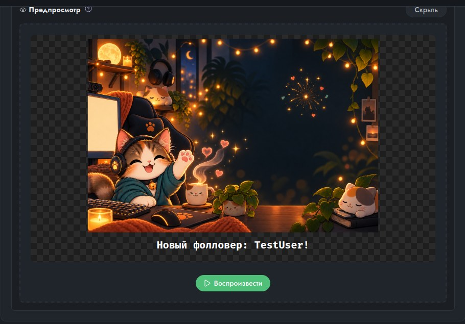

Twitch-бот, который живёт у вас на компьютере
Команды в чате, реакции на награды за баллы и события, автоматические шатауты и картинки со звуком прямо в OBS. Ничего не отправляет на чужие серверы, не просит пароль и не требует руководства: интерфейс объясняет себя сам.
Без подписок, лимитов и «премиум»-функций. Вход в Twitch хранится в защищённом хранилище вашей системы и никуда не отправляется.

Три принципа
Всё у вас
Бот работает на вашем компьютере, а не на чьём-то сервере. Настройки, картинки и звуки остаются у вас, а вход в Twitch хранится в защищённом хранилище вашей системы. Вход подтверждается кодом на странице Twitch, пароль приложению не нужен. Не нужно заводить аккаунт в стороннем сервисе и надеяться, что он сегодня работает.
Интерфейс объясняет себя сам
У каждой настройки подсказка рядом, а капсулы на карточках при наведении рассказывают о себе вашими же данными: какие алиасы у команды, кто может её вызывать, на какой оверлей уйдёт медиа. Предпросмотр показывает алерт ровно так, как увидит зритель. Если бот чего-то не может, он говорит об этом словами и предлагает, что сделать.
Бесплатно и без ограничений
Нет платной версии, подписки, лимитов на число команд или оверлеев, «премиум»-функций и рекламы. Всё, что умеет бот, доступно каждому сразу — и так останется. Это принцип проекта, а не этап перед монетизацией. Код открыт под лицензией MIT.
Как начать: девять коротких уроков
Каждый урок — про одну вещь: что нажать, что вы увидите и что означает слово, которое встретится по дороге. Скриншоты сняты с чистой установки, так что у вас на экране будет то же самое. Это не справочник: всё, чего здесь нет, подскажет сама панель.
Скачать
Версия 1.0.3. Файлы отдаёт GitHub, установка не требует ни аккаунта, ни регистрации.
sudo apt install ./SignoreBot_1.0.3-linux-amd64.debchmod +x SignoreBot_1.0.3-linux-amd64.AppImageЧто нового
Все сборки и прошлые версии — на странице релизов. Обновления приложение проверяет само и показывает плашку со ссылкой; настройки и медиа при обновлении остаются на месте. Собрать из исходников — README.